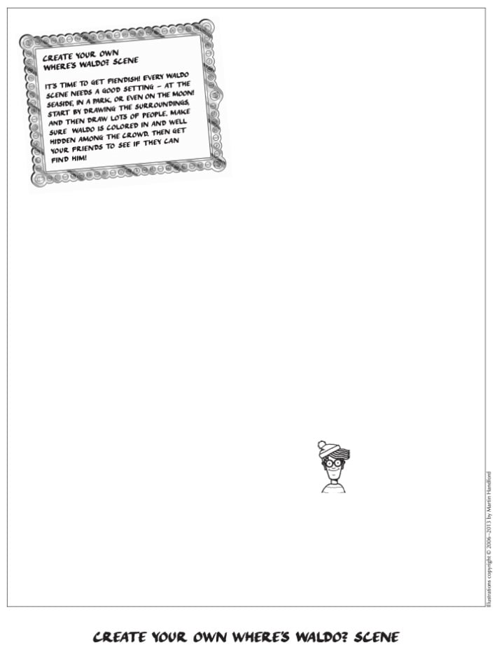
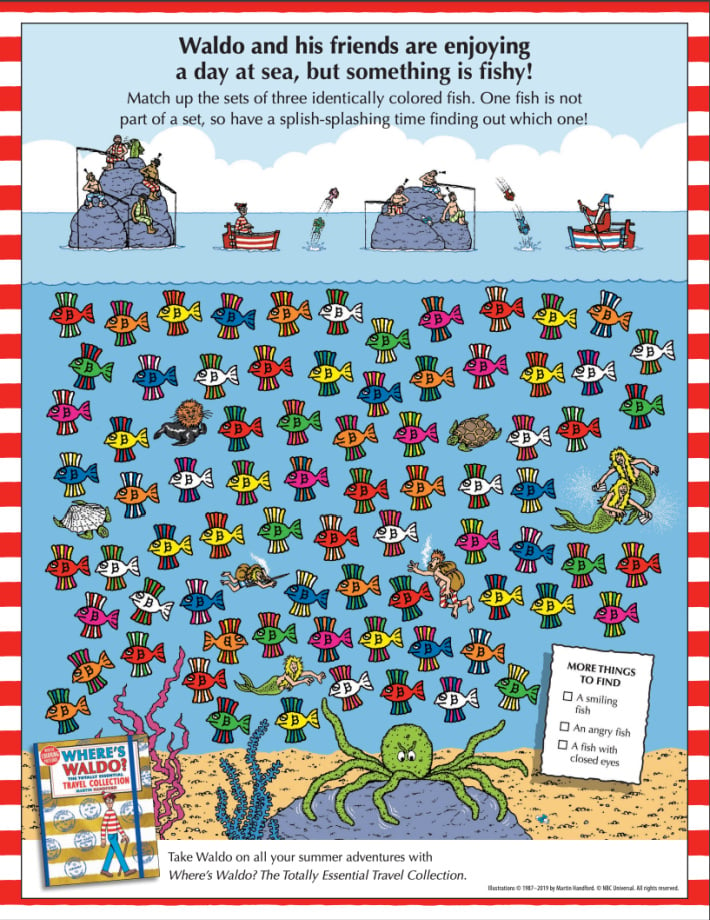
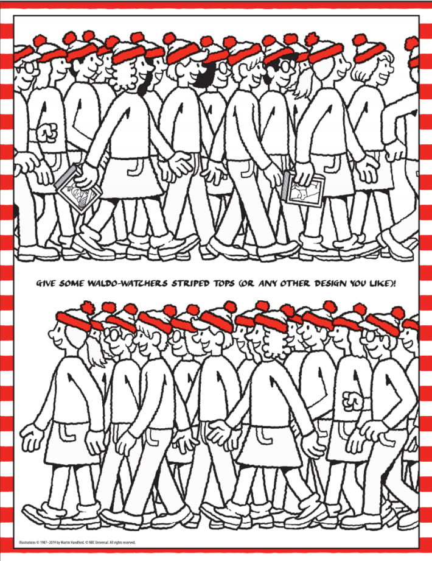
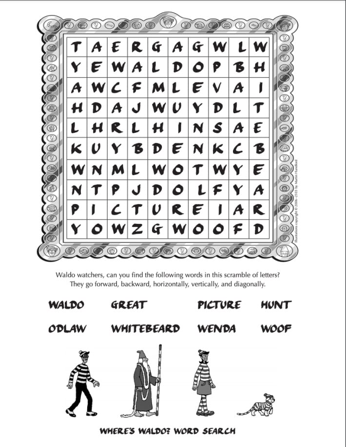
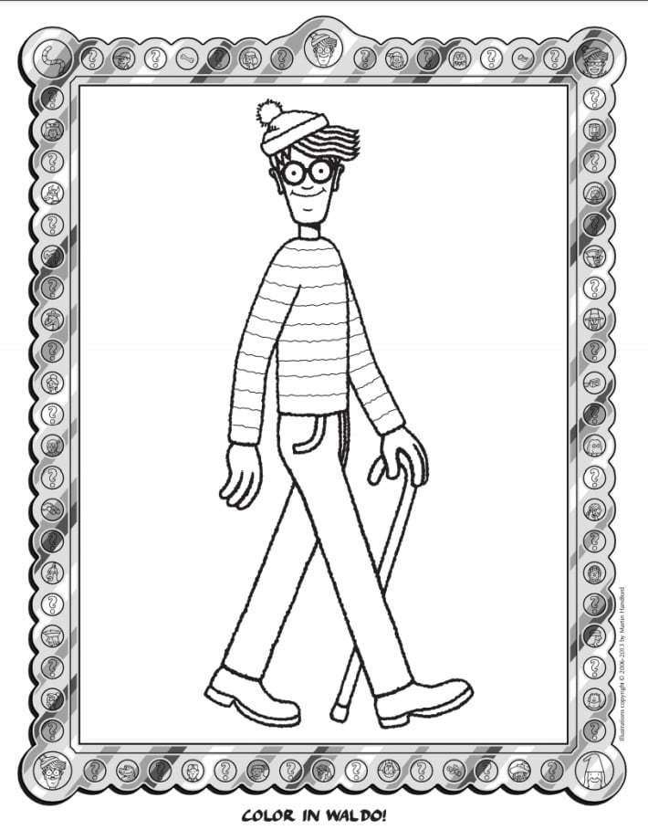
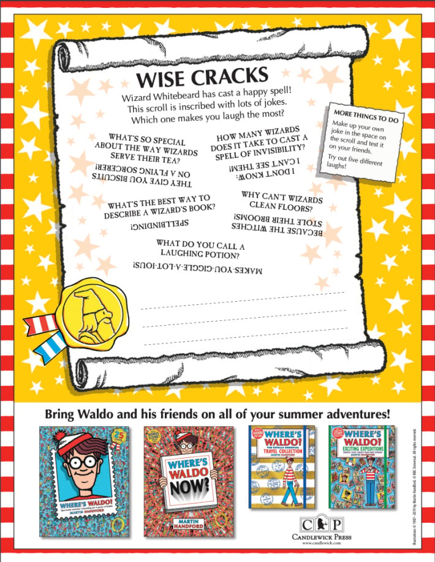
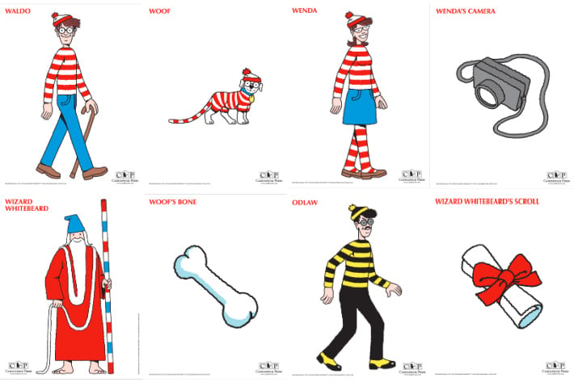
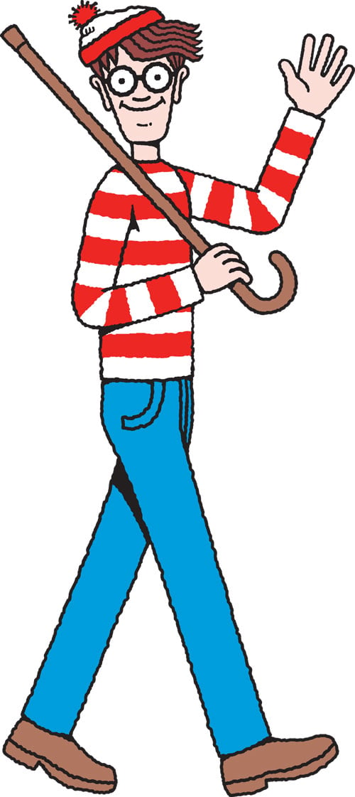
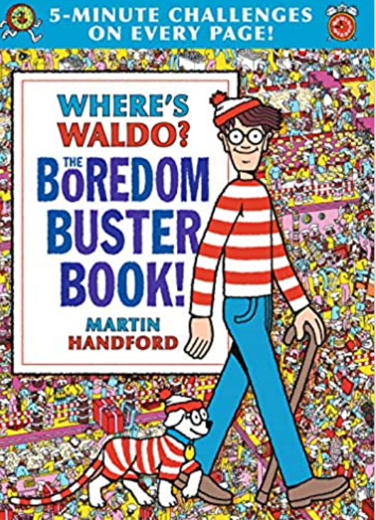

Where's Waldo Free Activities & Printables
If your kids love searching for that familiar red and white striped shirt and bobble hat, you are going to love this! We have compiled a curated collection of official, free where's waldo puzzles, coloring pages, online games, and creative printable worksheets that you can play online or download and print at home. Travel from the comfort of your living room and embark on a seek-and-find adventure with everyone's favorite traveler, Waldo!
So many ways to find Waldo! (Image Source: Candlewick Press)
Play Where's Waldo Online
You don't need a physical book to enjoy search-and-find puzzles anymore. Check out these fun, free online Waldo games you can play right in your web browser:
Tiny Tap Find Waldo
An incredibly simple Find Waldo online game similar to the classic books. Kids can click directly on Waldo when they spot him hidden in the crowds. 100% free.
Play on Tiny TapSporcle Waldo Challenge
An "I Spy" style game where kids scan detailed Waldo pictures and click on Waldo to beat the clock. Great for challenging focus and observation skills.
Play on SporcleFree Printable Where's Waldo Activities
Bring the search-and-find fun offline! Click any of the preview cards below to download and print the high-quality PDF activity worksheets provided by Candlewick Press:

1. Create a Waldo Scene
Become the Waldo artist! Draw your own detailed background (at the beach, in space, or a park) and hide Waldo among the crowd of characters you draw.
Download PDF Worksheet
2. Fish Matching Game
A fun color matching puzzle. Waldo and friends are enjoying a day at sea, but something is fishy! Match up sets of 3 identical colored fish to spot the odd one out.
Download PDF Worksheet
3. Dress the Waldo Watchers
An interactive art activity worksheet where you design clothing for Waldo's followers. Color and sketch unique striped tops or custom designs to help them blend in.
Download PDF Worksheet
4. Waldo Word Search
Find Waldo in a different way - with words! Search forward, backward, vertically, and diagonally for Waldo, Great, Picture, Hunt, Odlaw, Whitebeard, Wenda, and Woof.
Download PDF Worksheet
5. Waldo Coloring Page
Color in Waldo! Bring this line-art coloring sheet of Waldo walking with his trusty cane and waving to life with your favorite pencils, crayons, or markers.
Download PDF Worksheet
6. Wise Cracks Scroll
Wizard Whitebeard has cast a happy spell! This printable scroll features funny Waldo jokes and riddles, along with a space to write your own custom jokes.
Download PDF Worksheet
7. 10-Page Character Pack
Get printable character cut-outs of Waldo, Wenda, Wizard Whitebeard, Odlaw, Woof, and key search items. Perfect for puppets, paper dolls, or scavenger hunts!
Download PDF PackDIY Where's Waldo Scavenger Hunt
Turn your home or backyard into a live-action Waldo game! You can easily set up a customized Waldo search-and-find game using our character printables:
- Print and Cut: Download the 10-page character pack card above and print it out. Cut out all character figures and hidden items.
- Hide the Pieces: Hide the paper standees around your house, bedrooms, or backyard when the players are not looking.
- Begin the Search: Give players a list of characters they need to find (e.g. Waldo, Wenda, Woof's tail, Wizard's scroll).
- Compete and Win: The searcher who returns with the most items wins! Alternatively, use a timer to see if kids can beat their personal records.

I found Waldo! (Image Source: Candlewick Press)
Waldo Coloring Book Speed-Run
Watch a fast-paced coloring speed-run of an official Where's Waldo activity book for some creative inspiration:
Favorite Where's Waldo Books for Kids
If your family loves offline activity booklets, these classic books offer endless hours of puzzles, mazes, and seek-and-find grids:

Our top recommendation right now is the Where's Waldo? Boredom Buster Book. In addition to standard seek-and-find spreads, it is packed with word searches, mazes, matching quizzes, and a special five-minute challenge on every page.
Other classic Waldo books to explore: